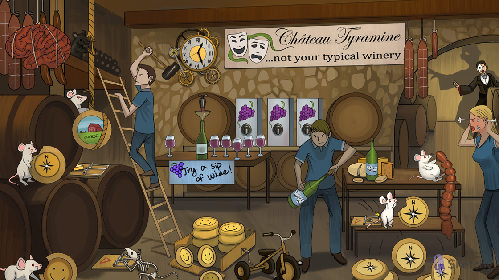

Albino mouse: monoamine oxidase A (MAO-A)
Albino mouse eating smiley face: MAO-A breaks down serotonin
Albino mouse eating north compass: MAO-A breaks down norepinephrine
Albino mouse eating rope: MAO-A breaks down dopamine
Black mouse: MAO-B
Black mouse eating rope: MAO-B breaks down dopamine
Mouse trap: MAO inhibitors
Irreversible trap: MAO inhibitors are irreversible
“Try a sip of wine”: tranylcypromine (MAO inhibitor)
Funnel: phenelzine (MAO inhibitor)
Boxed wine: isocarboxazid (MAO inhibitor)
Happy and sad masks: MAO inhibitors can treat depression (not first line)
“Not typical”: MAO inhibitors may be useful in atypical depression
Resistant wine bottle: MAO inhibitors can be useful in treatment resistant depression
Sledge hammer: selegiline (selective MAO-B inhibitor)
Brain tied with rope: selegiline (selective MAO-B inhibitor) increases dopamine levels in the CNS
Cog wheels: selegiline is useful in the management of Parkinson's disease (increases dopamine levels in the CNS)
Aged meats, wine, cheese: MAO inhibitors should be avoided with these tyramine
containing foods
Albino mouse eating GI meat: tyramine is normally broken down by MAO-A in the GI tract
Trap releasing north compass cheeses: in the presence of MAO inhibitors, tyramine enters the circulation and acts as a sympathomimetic agent
Hypertensive and sweaty: tyramine toxicity can precipitate a hypertensive crisis (e.g. hypertension, blurry vision, diaphoresis)
Pile of smiley faces: MAO inhibitors can cause serotonin syndrome
Tricycle: MAO inhibitors should be avoided with other drugs that increase serotonin levels
(e.g. TCAs, SSRIs, SNRIs → cause serotonin syndrome)
Phantom of the alpha: phentolamine (alpha-1 and alpha-2 blocker) can be used to manage
hypertensive symptoms of tyramine toxicity